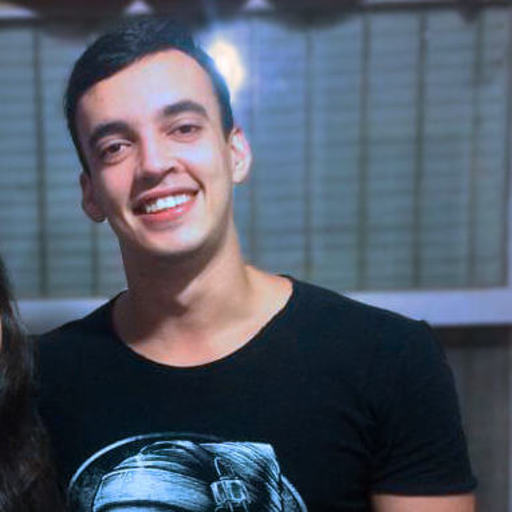
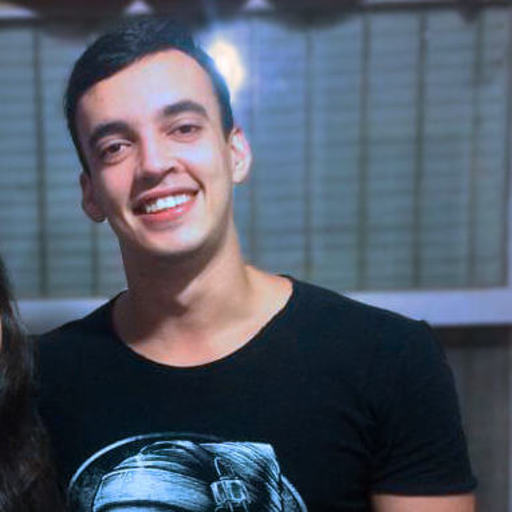

Full Stack Developer, React e Node.js
Desenvolvo aplicações web completas
Desenvolvo aplicações web completas
Chamo-me igor, tenho 23 anos e desde muito pequeno sempre fui muito curioso, tanto que me formei em biologia, pretendia me tornar um pesquisador. E foi lá, na faculdade, que tive um pequeno contato com programação, desde então venho buscando aprender cada vez mais a fim de me especializar e construir projetos maiores e melhores.
Centro Universitário de Volta Redonda - UNIFOA
Universidade Federal Fluminense - UFF (Cursando)
Future4 (Cursando)
Realizei trabalhos em locais e com equipes bem diversas, o que me fez aprender a entender e relacionar melhor com as diferenças e me adaptar as situações.
Aprendi ao estudar na Future4, ao resolver muitos exercícios e no desenvolvimento de alguns projetos práticos.
Realizei muitos trabalhos em grupo durante a faculdade e já tive experiências profissionais em equipe. o que me fez aprender muito sobre respeitar diferenças, ouvir opiniões e integrar esforços.
Aprendi ao estudar na Future4, ao resolver muitos exercícios e no desenvolvimento de alguns projetos práticos.
Sempre busquei aprender por conta própria, principalmente por ser curioso. realizei alguns cursos pela internet, e atualmente faço uma faculdade na modalidade EAD.
Sempre tive um pouco de organização, mas aperfeiçoei muito ao fazer as faculdades, o que me fez estruturar e otimizar melhor meu tempo, saber priorizar e cumprir os prazos.
Aprendi ao estudar na Future4, ao resolver muitos exercícios e no desenvolvimento de alguns projetos práticos.
Aprendi ao estudar na Future4 e ao praticar diáriamente em projetos e exercícios.